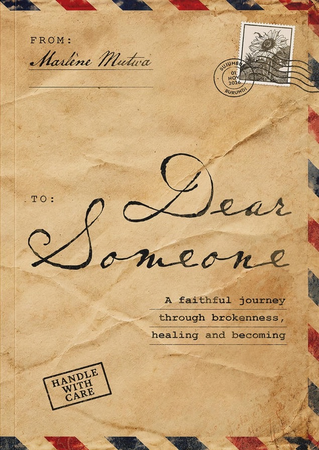

Pièce I · Le Livre · Bientôt
Dear Someone, un mémoire en fragments.
Tout a commencé par des pages pour ma mère, pour qu’elle puisse vivre mes journées avec moi, de loin. Quelque part entre les lignes, c’est devenu une lettre d’amour : à elle, à Dieu, et maintenant à toi.
Broché & livre numérique
Préviens-moi à sa sortie
Extrait de la préface
Je n’ai jamais su dire ma vie à voix haute, mais l’écrire ? Ça, je savais le faire. Alors, si elle ne pouvait pas vivre ces moments avec moi, je les lui offrirais à travers mes mots.
Mais avec le temps, c’est devenu bien plus qu’un livre pour ma maman. C’est devenu une part de moi-même que j’apprenais à chérir, aussi laide fût-elle.
Lettres
À un ami, à un pays, à Dieu, à quiconque en a besoin.
Poèmes
Pour les sentiments qui refusaient de tenir en phrases complètes.
Pages de journal
Datées, brutes, et gardées telles quelles, à dessein.